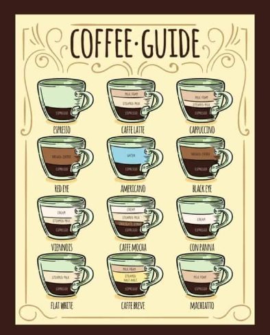
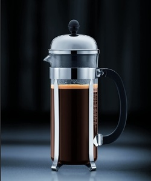
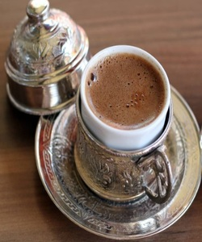

¿Qué es el Café?
El café es una bebida hecha con las semillas tostadas de la planta del café. El café es una bebida preparada con granos de café tostados, que son las semillas de las bayas de la planta Coffea. La planta Coffea es originaria del África tropical, y los granos de café son en realidad los huesos de los frutos rojos o morados que crecen en la planta.
¿Cuál es el origen del café?
La historia del origen del café da inicio en Etiopía, probablemente en la provincia de Kaffa. Existe una leyenda que cuenta que en Etiopia hubo un joven pastor y poeta llamado Kaldi que observó el efecto energético que mostraban sus cabras después de haber comido cerezas de café y que luego lo comprobó en el mismo.
¿Cómo se clasifica el Café?
El café se clasifica con el fin de eliminar cualquier grano descompuesto, descolorado o dañado. La selección puede mecanizarse, en las instalaciones industriales, con ayuda de cámaras con CCD, pero esta operación se hace a menudo manualmente, en los países en desarrollo. Además, se clasifican los granos por tamaño.
Guia de Cafe
Diferentes formas de preparar café
- Elaboración de café a presión
- Máquina de café express: De todos los métodos de preparación a presión, la máquina de espresso es la más conocida. Una bomba crea presión dentro de la máquina, forzándola a través del café molido a 9 bares para hacer un café rico y concentrado. Esta es la premisa básica, pero hay innumerables tipos de cafeteras espresso. Las máquinas semiautomáticas necesitarán que aprenda a moler, dosificar y apisonar sus granos para saca el espresso perfecto. De manera diferente, las automáticas completas harán todo, incluso vaporizar su leche. mientras haya cafeteras espresso portátiles, la mayoría de estos necesitarán un poco de espacio en su cocina.
- Olla moka: Es posible que haya oído hablar de Olla moka se conoce como la "fabricante de espresso de estufa". Estrictamente hablando, no es un verdadero espresso, pero seguirá siendo rico y concentrado. La presión aquí se crea a medida que el agua se calienta en la cámara inferior, se fuerza hacia arriba a través de los posos de café y hacia la cámara superior. El café moka puede tender a ser amargo si se sobrecalienta. Pero puede evitarlo comenzando con agua caliente en lugar de fría, lo que significa que su olla pasa menos tiempo en la estufa
- AeroPress: Esta cafetera sin pretensiones es un invento reciente, pero se ha convertido en un éxito sorpresa entre los baristas y los usuarios domésticos por igual. El método de elaboración de cerveza "estándar" Aeropress utiliza presión generada manualmente a través del émbolo de goma. Sin embargo, Aeropress es mucho más versátil de lo que imaginas.
- Máquina de cápsulas de un solo servicio: El una porción La máquina de cápsulas (como Nespresso) se creó para replicar la experiencia del café para los usuarios domésticos. La idea era no necesitar ninguna habilidad de barista para usarlo. Al igual que con una máquina de espresso, se usa una bomba para crear presión de agua, solo que en este caso, se fuerza a través de una cápsula preempaquetada de café molido. Es un proceso totalmente automatizado y crea una muy buena aproximación a un espresso. Con la adición de un buen espumador de leche, puede obtener una variedad de bebidas estilo café.
- Preparación de café por inmersión

- Prensa francesa: A veces conocida como la cafetera o la olla de prensa, la Prensa francesa es tan simple como se pone cuando se trata de inmersión. Se agrega agua caliente a los terrenos y se dejan reposar. En la concentración deseada, presiona el filtro de malla para separar el café y los posos para beber. La falta de un filtro de papel significa que retienes los aceites naturales del café. A pesar del efecto de inmersión, no hay presión cuando se utiliza la prensa francesa.
- Cerveza suave: Esta cafetera es bastante similar a la prensa francesa, pero la hemos agregado por separado aquí porque hay algunas diferencias clave. Parece una tetera pero tiene una canasta de filtro en el interior. Agregue los posos a la canasta, seguido del agua caliente, luego deje reposar. La canasta removible hace que sea mucho más fácil de limpiar que una prensa francesa, y el filtro más fino le permite usar una amplia gama de tamaños de molienda.
- Sifón: La cafetera de sifón o de vacío combina elementos tanto de inmersión como de preparación a presión. No hay electricidad involucrada: calienta el agua sobre una llama abierta, obligándola a entrar en la cámara de preparación. Aquí los posos se dejan sumergir en el agua durante alrededor de 1 minuto 30 por completo. Al final de la preparación, la presión del vacío hará que el café baje a través de un filtro, utilizando una ligera presión para extraer lo último del café molido.
- Cerveza fría: Hacer café frío consiste en agregar granos de café molido al agua fría y dejarlo reposar hasta que se logre la concentración deseada. Como no hay calor para ayudar a la extracción, tiene un tiempo de preparación considerablemente más largo que cualquier otro método. Un tarro de albañil funciona perfectamente bien, pero si quieres hacer cerveza fría regularmente, hay cafeteras de inmersión en frío con filtros incorporados. Este método tiende a resaltar notas de chocolate o nuez.
- Bolsas de cafe: Si nunca has visto una bolsa de café, es fácil de imaginar. Es precisamente como una bolsita de té pero llena de café molido. Simplemente agregue agua caliente y deje reposar, sacando la bolsa cuando su infusión alcance la fuerza deseada. En teoría, no es diferente de cualquier otro método de remojo. Aún así, el hecho de que no esté usando café recién molido, eligiendo sus granos o eligiendo la cantidad de café molido, significa que no obtendrá una gran infusión aquí.
- Preparacion de café mediante filtración
- Cafetera de goteo: La cafetera de goteo funciona como un vertido manual, pero la máquina calienta y vierte. Puede parecer una pequeña diferencia, pero la falta de control sobre muchas variables a menudo significa que no obtendrá la calidad de café que puede esperar de la versión manual. Para una mejor preparación, busque una que sea certificado por SCAAo con un jarra térmica, que mantiene tu café caliente sin sobrecalentarlo.
- Percolador eléctrico o de estufa: La percoladora de estufa puede confundirse fácilmente con la cafetera Moka. Pero la percoladora funciona por goteo en lugar de presión. Tanto en los modelos eléctricos como en los de estufa, calientas el agua hasta que hierva antes de ser empujada hacia la parte superior de la cafetera, donde cae sobre el suelo. El proceso se repite hasta que el café esté lo suficientemente fuerte, lo que desafortunadamente significa que tu café se hierve una y otra vez.
- Vierta sobre: Esto es lo que puede considerar el método de vertido genérico. Incluye algunas cafeteras específicas que quizás conozcas, como la Hario V60 o la Kalita Wave. Estos consisten en un artilugio de cono lleno de un filtro, que se sienta sobre su taza. La forma de la cafetera individual determina la lentitud con la que gotea el agua y determina el perfil de sabor único. El hecho de que puedas controlar casi todas las variables hace que sean tan populares entre los amantes del café. Si desea participar en la diversión, al menos debería invertir en un escala, pero preferiblemente un hervidor de cuello de cisne
- Chemex: Piensa en el café de la tercera ola y te viene a la mente el Chemex. A pesar de haber sido inventado décadas antes, la gran cafetera escultural de vidrio y madera se ha convertido en el símbolo del café hipster. Técnicamente, es sólo otro cafetera para verter, pero aparte de la apariencia, algunas cosas lo hacen destacar. A diferencia de otras cafeteras, esta es un filtro y una jarra, todo en uno. La escala tanto del cono como de la jarra significa que puede preparar cantidades más grandes a la vez. En términos de elaboración, Chemex utiliza su marca de filtros significativamente más gruesos. Esto tiene el resultado de producir una infusión mucho más limpia.
- Phin vietnamita: Si te encanta el café helado vietnamita, querrás invertir en un phin. Es una pequeña cafetera monodosis que consta de una cámara de preparación de metal, un filtro y una tapa. Hacer café vietnamita es más infalible que otros métodos de vertido. No hay técnica: simplemente agrega su café y agua, coloca la tapa y deja que gotee sobre su taza. Para el sabor tradicional, hazte con los granos de café vietnamita, que suelen ser Robusta.
- Cerveza de goteo frío: Ya hemos cubierto el método básico de preparación en frío anterior, pero también es posible preparar sin calor usando un método de goteo. Como este método carece tanto de calor como del contacto prolongado de la inmersión, necesitará un cafetera de cerveza fría. Esto a menudo consiste en una torre de tres vasos: la parte superior con agua fría, el medio con los posos y la parte inferior para el café recolectado. La configuración permite un control exacto sobre la tasa de goteo y, por lo tanto, la extracción. El tamaño de la molienda es muy importante para este método, por lo que deberá equiparse con un buen molinillo de rebabas.
- Preparación del café hirviendo

- Café vaquero: En el camino, no tenían cafeteras. Pero lo que sí tenían era una olla y un fuego. Este método evolucionó por necesidad, pero aún hoy tiene seguidores. Haga hervir el agua, agregue el café e inmediatamente retírelo del fuego. Cubra el café para que se empape y, para cuando esté listo, los posos deberían haberse asentado. La mayoría de la gente simplemente vierte el café con cuidado desde la parte superior, pero también puedes usar un cucharón. Es muy básico, pero obtener la molienda y la proporción correctas hará que la preparación sea mejor.
- Café turco: El paso para hacer cafe turco Puede parecer similar al método del vaquero, pero es una forma mucho más refinada de tomar tu café. Los posos finos en polvo se agregan a un ibrik o cezve junto con agua fría y azúcar. Luego, la mezcla se calienta justo por debajo del punto de ebullición, luego se retira del fuego y luego se repite el proceso. El café se vierte sin filtrar y los posos se dejan reposar en las tazas antes de beber.